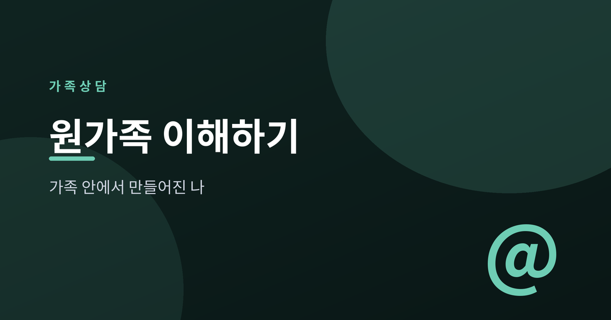
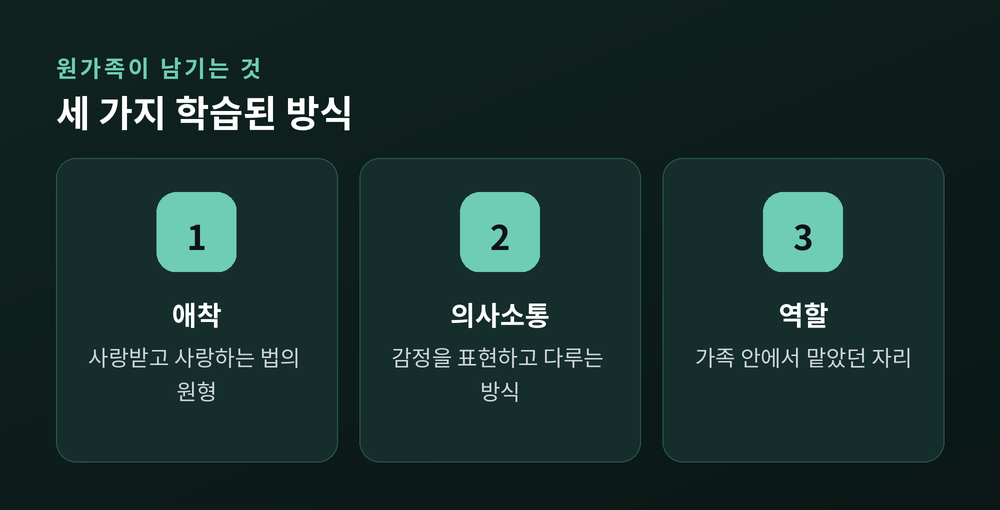
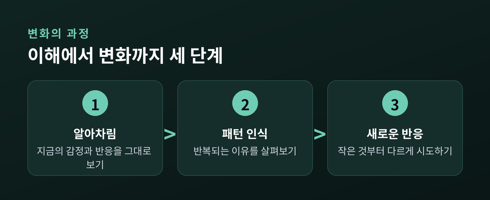
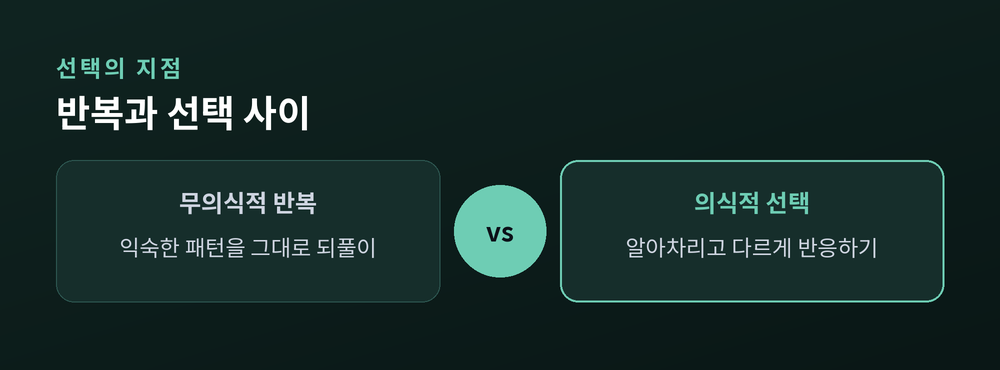

가족 안에서 만들어진 나를 이해하기

원가족은 내가 태어나 처음으로 소속되었던 가족을 말합니다. 지금 꾸리고 있는 가정과는 별개로, 나를 키워낸 부모와 형제자매, 혹은 그에 준하는 양육자들로 이루어진 첫 번째 관계망입니다. 우리는 이곳에서 처음으로 사랑받는 법, 화를 표현하는 법, 갈등을 다루는 법을 배웠습니다. 누가 가르쳐준 것이 아니라 그저 그 안에서 살아가며 자연스럽게 몸에 익힌 것들입니다.
그래서 원가족은 한 사람의 성격이나 습관이 아니라, 관계를 맺는 방식 그 자체에 깊이 새겨져 있습니다. 지금의 내가 사람을 대하는 태도, 감정을 억누르거나 터뜨리는 방식, 심지어 사랑을 표현하는 방식까지도 그 뿌리를 거슬러 올라가면 원가족과 만나게 되는 경우가 많습니다.

가족치료학자 머레이 보웬은 가족체계이론을 통해 가족을 하나의 정서적 단위로 설명했습니다. 그중 자기분화라는 개념은, 감정과 사고를 얼마나 구분해서 다룰 수 있는지, 타인과 친밀하면서도 자신의 중심을 잃지 않을 수 있는지를 뜻합니다. 자기분화 수준이 낮은 가족 안에서 자란 사람은 관계 속에서 쉽게 휩쓸리거나, 반대로 지나치게 거리를 두는 방식으로 자신을 지키려 하기도 합니다.
또 하나 눈여겨볼 개념은 세대 전수입니다. 부모가 자신의 부모에게서 물려받은 정서적 패턴이, 의식하지 못한 채로 자녀에게 다시 전달된다는 뜻입니다. 갈등을 피하는 집안에서는 자녀도 갈등을 피하는 법을 배우고, 감정 표현이 서툰 집안에서는 자녀도 자신의 감정을 알아차리기 어려워하는 식입니다. 이는 누군가의 잘못이라기보다, 가족이라는 체계 안에서 자연스럽게 흘러온 흐름에 가깝습니다.

상담 현장에서 자주 마주치는 사례를 일반화해보면, 이런 패턴들이 있습니다. 어릴 때부터 부모의 갈등을 조율해야 했던 사람은 어른이 되어서도 주변 사람들의 감정을 살피고 책임지려는 과도한 책임감을 지니게 되기 쉽습니다. 반대로 감정 표현이 억압되었던 환경에서 자란 사람은 갈등이 생기면 대화보다 회피를 먼저 선택하는 갈등 회피 패턴을 반복하기도 합니다.
이런 패턴은 본인도 모르게 작동하는 경우가 많습니다. 분명 힘든 관계인데도 왜 자꾸 비슷한 상황에 놓이는지 스스로도 이해되지 않을 때, 그 뿌리가 원가족에서의 경험과 맞닿아 있는 경우가 적지 않습니다.
원가족을 들여다보는 일은 누군가를 탓하기 위한 작업이 아닙니다. 지금의 나를 이해하고, 앞으로 다르게 선택할 수 있는 힘을 찾기 위한 과정입니다.

패턴을 바꾸는 일은 단번에 일어나지 않습니다. 먼저 지금 내 감정과 반응을 있는 그대로 알아차리는 것에서 시작합니다. 그다음 "나는 왜 항상 이런 상황에서 이렇게 반응할까"를 살펴보며 패턴을 인식하고, 마지막으로 예전과는 다른 새로운 반응을 아주 작은 것부터 시도해보는 단계로 나아갑니다. 이 과정은 한 번에 끝나지 않고 여러 번 되풀이하며 조금씩 자리를 잡아갑니다.
한 가지 더 기억해두면 좋은 관점이 있습니다. 나의 부모 역시 그들만의 원가족에서 자라났고, 그 안에서 배운 방식으로 최선을 다해 부모 역할을 했다는 사실입니다. 이는 부모의 행동을 정당화하려는 것이 아니라, 그 사람 역시 자신이 물려받은 것 안에서 살아왔다는 사실을 이해함으로써 나 자신을 조금 더 편안하게 바라볼 수 있는 여지를 만들어줍니다.
원가족은 나를 설명해주는 배경이지, 나의 전부를 결정짓는 운명은 아닙니다. 그 안에서 무엇을 물려받았는지 이해하는 것만으로도 이미 변화는 시작된 것입니다.
어려움이 지속되거나 힘겹게 느껴진다면 가까운 상담 기관이나 전문 상담사의 도움을 받아보시길 권합니다.